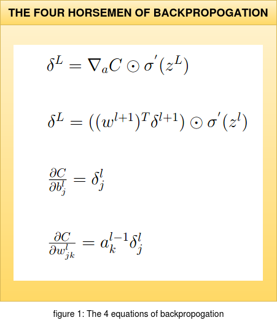
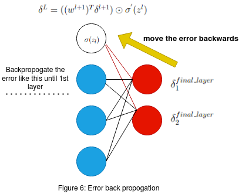

The 4 Horsemen of Backpropogation
This post is about the 4 equations that make backpropogation great in deep neural networks. This is a topic providing a different view point of the equations and answering questions involving on how and why certain terms exist within the equations. Having a strong mathematical background in backpropogation is recomededded in order to appreciate this post.
 The structure of the equations shown in figure 1 (for example: using the Hadamard product instead of Matrix multiplication) is inspired from the book "Neural Networks and Deeplearning" by "Michael Nielsen". This book is highly recommended if one is looking for a mathematically intensive approach to the topic. In this article we will not dive into the backpropogation algorithm itself but try and understand the relevence of these equations and how certain terms appear in them. This post can be used as a supplement while understanding backpropogation or like a cheatsheet if one has understood the mathematical view point of this algorithm. Before discussing about each equation we will quickly establish what each term in the set of four equations mean; considering a pictorial representation of a Deep Neural Network (DNN).
 Figure 2 on the right with the configuration of 3-4-2 DNN structure depicts the various terms in the network. 'w' is the weight arriving to the corresponding neuron.
The weight 'w' is moving to the 'jth' neuron in the 'lth' layer from the 'kth' neuron in the '(l-1)th' layer. The weighted sum at a neuron in layer 'l' with bias 'b' is represented by 'z'.
A point to remember here is that the bias 'b' is local to a neuron while the weights 'w' are not. The activation function is represented by 'σ' and the activation function of a neuron is given by 'σ(z)'.
Here the output of the activation is represented by 'a' , that is σ(z) = a.
Figure 2 on the right with the configuration of 3-4-2 DNN structure depicts the various terms in the network. 'w' is the weight arriving to the corresponding neuron.
The weight 'w' is moving to the 'jth' neuron in the 'lth' layer from the 'kth' neuron in the '(l-1)th' layer. The weighted sum at a neuron in layer 'l' with bias 'b' is represented by 'z'.
A point to remember here is that the bias 'b' is local to a neuron while the weights 'w' are not. The activation function is represented by 'σ' and the activation function of a neuron is given by 'σ(z)'.
Here the output of the activation is represented by 'a' , that is σ(z) = a.
The Cost function C considered here is given by the quadratic equation as shown in the figure. Here 'ajL' is the final prediction at the 'Lth' layer and the 'jth' neuron. and 'yj' is the ground truth at the 'jth' output neuron of the input data point. Here an important point to note is that the ground truth is constant thus the cost C is purely a function of 'aL' , Cost C = C(aL).
Now we will consider the most important term that we are interested in 'δ'. Here consider the neuron marked in light pink , the blue arrows indicate the incoming weights 'w' to the neuron while the red arrows indicate the outgoing activation terms 'a'. When the weighted sum 'z' with the incoming blue weights 'w' along with the bias 'b' in the neuron is computed it induces an error 'δjl'' ; at the 'jth' neuron and the 'lth' layer. Futher this error propogates through the rest of the network as it effects the activation 'σ' as shown in the figure and eventually effects the output 'aL'. Since we know that the Cost 'C' is completely dependent on 'aL' in the final layer , the term that would be interesting for us is the partial derivative ∂C/∂zjl which tells us the rate of change of the Cost function with respect to the weighted sum 'z' which includes the incoming weights 'w' and bias 'b' of the neuron. Thus if we can somehow get to know the partial derivative ∂C/∂wjkl at the 'jth' neuron in the 'lth' layer , this will give us information on how the cost function is changing with respect to a wight 'w' in some random neuron in the network. Finally this can be used to modify the weights in our network and thus allowing us to modify the 'δjl' value with a motto of reducing the Cost function. This was a fast recap of the essentials before we start discussing about each equations and this sets the stage for futher discussions. The gif below shows the pictorial recap of the working of backpropogation. Since we have set the stage for our article now we can finally start appreciating the math and have a natuarl understanding of the four equations in figure 1.

Figure 3: Backpropogation working montage
1. δL = ∇aC ⊙ σ'(zL)
Now that we have set the platform to discuss about the four equations we can start with the first one which is δL = ∇aC ⊙ σ'(zL). but before discussing this matrix format of the equation we will review the same equation but with a touch of calculus. In calculus format the above equation is given as δLj = ∂C/∂aLj σ'(zLj). But how did we arrive at this expression ? I always prefer the pen and paper approach to enlighten myself during such doubts. We will consider the pictorial representation of a DNN with the required terms as shown in figure 4 along with the pen and paper derivation.
 Figure 4 on the left shows a pictorial representation of a DNN with N layers. Now we will consider the neuron marked in light pink in layer l. The 'zjl' is the weighted sum of the incoming weights to the neuron
along with the bias in that neuron. Once we apply the activation σ(zjl) we get the output for that neuron as 'ajl'. Here l represents the layer and j the jth neuron in the corresponding layer.
We had previously established that the error δlj induced inside the neuron can be approximated to the rate of change of the final output cost function at the prediction layer with respect top the weighted sum in the neuron of interest.
This is given by the following partial derivative expression δlj=∂C/∂zjl.
Thus by doing this we are trying to see how an error in one neuron is affecting the final prediction as it propogates through the other layers in the forward direction , hence the partial derivative.
Now using these infomation along with a pen and paper we will see why we end up getting δLj = ∂C/∂aLj σ'(zLj).
Figure 4 on the left shows a pictorial representation of a DNN with N layers. Now we will consider the neuron marked in light pink in layer l. The 'zjl' is the weighted sum of the incoming weights to the neuron
along with the bias in that neuron. Once we apply the activation σ(zjl) we get the output for that neuron as 'ajl'. Here l represents the layer and j the jth neuron in the corresponding layer.
We had previously established that the error δlj induced inside the neuron can be approximated to the rate of change of the final output cost function at the prediction layer with respect top the weighted sum in the neuron of interest.
This is given by the following partial derivative expression δlj=∂C/∂zjl.
Thus by doing this we are trying to see how an error in one neuron is affecting the final prediction as it propogates through the other layers in the forward direction , hence the partial derivative.
Now using these infomation along with a pen and paper we will see why we end up getting δLj = ∂C/∂aLj σ'(zLj).

Figure 5: How we arrive at first equation
As shown in the old school method of pen and paper in the figure 5 we see how we arrive at the corresponding equation. Thus the error δlj in the jth nueron of the lth is given by the product of:
1. How fast the the cost 'C' is changing as a function of the activated output 'a'. If the Cost 'C' does not depend on a particular output of a neuron 'j' then its 'δlj' will be small.
2. How fast the activation function 'σ' is changing with respect to its input weighted sum 'zlj'.
From the above two points we have now understood how the error evolves as it propogates through the network and also this way of writing the equation gives a natural flow in understanding how the various terms in the equation effect the final cost function that we are interested in to minimize. Another important thing to consider here is that the product between the two terms in the equation is an elementwise operation , thus it is the Hadamard product that is used while representing the above equation in matrix form.
As we have gained enough insight using calculus and why certain terms appear in the equation , we can now write the equation δjl in matrix form as:
δL = ∇aC ⊙ σ'(zL)
Now this equation considers one layer in the DNN and represnts all the errors of that layer in a vector form , hence represented as δl; where 'l' represents the layer. The ∇ operator also called the nabla operator is used to represent the partial derivative of 'C' with respect to 'a' here. ∇aC is the rate of change of C with respect to output activations represented as a vector. Finally we have the Hadamard product or the elementwise product ⊙ with σ'(zl). Now considering the cost function as a quadratic function as shown previously ; we can rewrite the expression ∇aC = (aL-y). We get this term when we take the partial derivative of the Cost C with respect to a (∂C/∂a). Thus we can rewrite the equation for δjl as:
δL = (aL-y) ⊙ σ'(zL)
An important point to remember is that , this equation is used to get the error δL in the forward direction. This is the feed forward part of our algorithm where we see how the error is propogated to the end layer eventually affecting the output prediction. Thus the δL calculated here is the error in the final layer. We will use this to calculate the errors δL-1,L-2,..2,1 in the rest of the layers using the second equation. In simple terms we can think of it as , calculating the individual layers error matrix δL in the backward direction.
2. δL = ((wl+1)T δl+1) ⊙ σ'(zL)
The second equation which is stated above is used to propogate the error from layer l to layer (l-1). This means that equation 1 allowed us to calculate only the error δL of the final layer. Equation 1 alone cannot be used to find out the δL of the other layers. Thus to find out δL-1,L-2,..2,1 of the other layers we use δL of the final layer and propogate it backwards according to the above stated second equation.
 First we will understand the 2nd equation using Figure 6 on the left. As we can see the two red neurons are the neurons in the final layer. δ1final_layer and δ2final_layer are the errors that we have calculated using equation 1 . Now we have to calculate the errors in the previous layer (l-1) (blue layer in the figure.) Consider the white color neuron in the (l-1)th blue layer. The red lines in the figure show us the connection between the output layer neurons and the white neuron that we have considered in the (l-1)th layer. Remeber that the Weights 'W' in the network are unaltered and they remain the same from the previous step of equation 1 . σ(zL) is the previously claculated activation for the white neuron in its corresponding layer.
Now that we have established what all the necessary terms mean in the figure 6 we can proceed to understand the back propogation of error. Consider the weighted sum of the error δ1final_layer , δ2final_layer and the two weights (marked in the red connection between the final layer 'l' and the white neuron in layer '(l-1)'. The weighted sum of the error is given by the following equation:
w1 * δ1final_layer + w2 * δ2final_layer
From the above equation we see that , we are using both δ1final_layer and δ2final_layer as inputs to the previous layer by computing the weighted sum . Now that we have calculated the weighted sum of error for the white neuron we need one more term to help us compute the δ in the white neuron of the blue layer. The term that is going to help us is the activation σ(z) in the white neuron. Remember this σ(z) was the input to the feed forward part of the final layer to get the output.
So to sum up we can think of this as , σ(z) in the white neuron was carrying some error and this error was forward propogated to the final layer. The error in the final layer is calculated using the equation 1 (This final error has been effected by the previous errors) . Now we use this error and calculate the weighted sum in the opposite direction that is towards the (l-1) layer. But to get the error present inside the white neuron of the (l-1)th layer we mutiply the backward propogated weighted error sum with σ'(z) of that white neuron. We consider the first derivative as the rate of change of this activation is with respect to the previous weighted sum in the feed forward process and this is where the actual error of the white neuron exists. Thus the error δ in the white neuron is given by:
δ = σ'(z) ⊙ (w1 * δ1final_layer + w2 * δ2final_layer)
We saw how the error δ is calculated for one of the neuron (white neuron) in the final-1th layer of the network. We can implement the same process for the other neurons in the same layer and then contunie this propogation to the previous layers , thus finding out all δ values of every neuron in the network. Now consider the final equation in the matrix form:
δL = ((wl+1)T δl+1) ⊙ σ'(zL)
In this final equation we have the matrix multiplication between the weights and the errors. The matrix multiplication is used for the weighted sum of the errors and finally the hadamard product is for the elementwise product between the weighted sum and σ'(z) for every neuron in the corresponding (l),(l-1), (l-2) ... layers as the error propogates. When we apply transpose of the weight matrix (w(l+1))T we can think of this intuitively as moving the error backward through the network , giving us some measure of error at the out of the previous (lth) layer. This concludes the second equation. Both first and second equation have to be used together to calculate all the errors δ inside of every neuron in the network. Figure 7 provides us the reason why we use the transpose of the weight matrix to propogate the error. Again if you get stuck someplace get a pen and paper and start scribling the equations , it really helps.

Figure 7: Why matrix transpose in backpropogation
3. ∂ C/∂ blj = δ lj
This is a pretty straight forward expression. As mentioned earlier , the bias term is local to each neuron in their corresponding layers. So the rate of change of the cost function with respect to the bias is directly linked to the localized error within that neuron. From the previous two equations we have understood on how to compute δ for every neuron. We can simply write this equation as:
∂ C/∂ b = δ
It is understood from the above equation that we compute δ for the same neuron as the bias 'b'.
4. ∂ C/∂ wljk = al-1k δlj
Finally this is what we are interested in , that is the rate of change of the cost C with respect to any weight in the network. Looking at the RHS of the equation ; we now know both the terms to calculate ' ∂ C/∂ wljk'. But to have an intuitive understanding of this expression consider figure 8.

Figure 8: Fouth equation pictorial representation
We see that there are 2 neurons interconnected in figure 8 and this can be between any layer. Finally the rate of change of cost function at the output with respect to the weight that exists between these two neurons is given by the product of the previous activation term a and the error δ induced in the neuron towards which the weight is moving.
5. INSIGHTS
1. If 'a' is close to 0 then the gradient term ∂ C/∂ w will also be small. In this case we say that the weights learn slowly. This means that weights outputed from low activation neurons learn slowly.

Figure 9: Sigmoid activation
2. Consider the standard activation function ; the sigmoid function as shown in figure 9. The sigmoid function becomes flat when σ(zLj) is approximately 0 or 1. When this happens we will have σ'(zLj) = 0. This means that a weight will learn slowly if the output neuron is either low activated (~ 0) or high activation (~ 1). The term for the neuron that is highly activated is a saturated neuron.